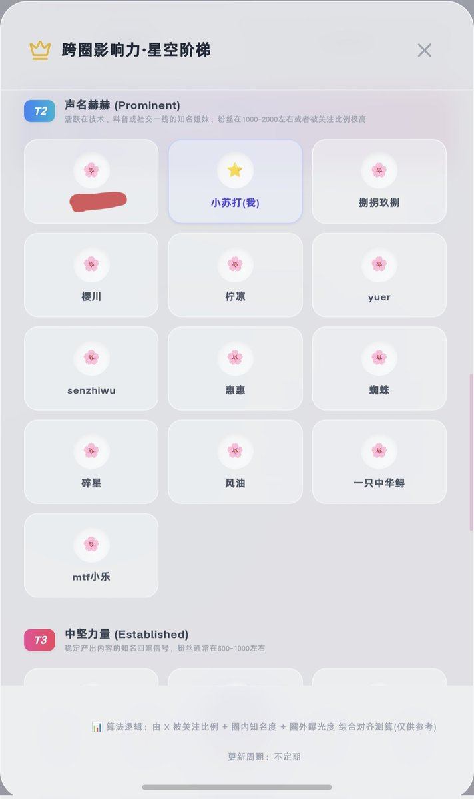
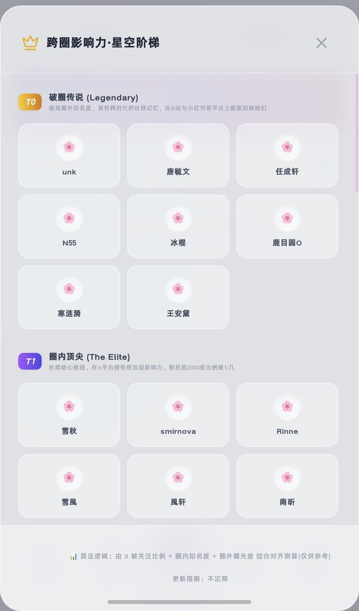
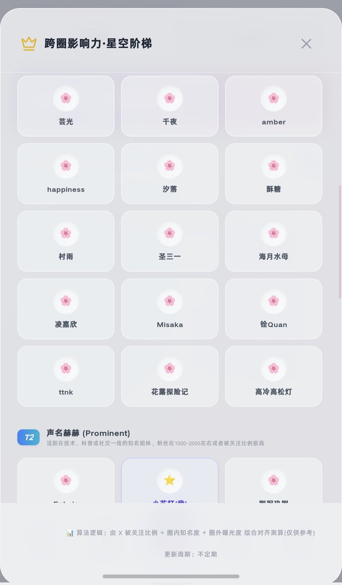
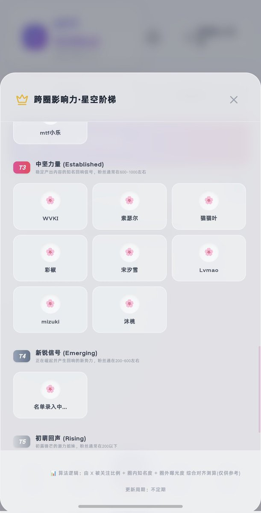

我没法回复这个帖子
说到名单。。。似乎总有人忘记前猫的成果的喵
https://t.co/C1kYmR1SGb

说到名单。。。似乎总有人忘记前猫的成果的喵
https://t.co/C1kYmR1SGb




我们正在抓紧添加名单，确保每一个姐妹们都能上榜，这个排行榜将会在V3.5MTF世界上见到。
同时我们正在加急招募排榜人与投稿人，以更客观更明确的形式，向大家展示更好的排名，如有需要，请加我置顶的群聊，皆时会创立一个新的机构，叫做''跨圈排榜机构''。
敬请期待...... https://t.co/U9FC2jWA3h
同时我们正在加急招募排榜人与投稿人，以更客观更明确的形式，向大家展示更好的排名，如有需要，请加我置顶的群聊，皆时会创立一个新的机构，叫做''跨圈排榜机构''。
敬请期待...... https://t.co/U9FC2jWA3h